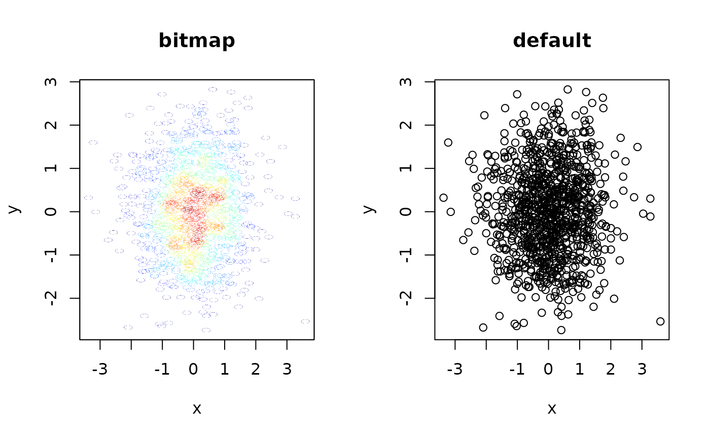

plotBitScatter is a wrapper around plot which renders the
plot area as a bitmap (png), but keeps all other elements (axes, labels, etc.)
as vector elements. This is especially useful for keeping the size of PDF files
with scatter plots with many elements small, while retaining editability of axes.
plotBitScatter( x, y = NULL, ..., densCols = TRUE, colpal = c("#00007F", "blue", "#007FFF", "cyan", "#7FFF7F", "yellow", "#FF7F00", "red", "#7F0000"), xpixels = 1000, ypixels = NULL, pointsize = NULL )
| x |
|
|---|---|
| y |
|
| ... | any further arguments to be passed to |
| densCols |
|
| colpal | vector of colors defining the palette for automatic density-based coloring. |
| xpixels | the number of pixels in the x dimension used for rendering the plotting area. |
| ypixels | the number of pixels in the y dimension used for rendering the
plotting area. If |
| pointsize | the size of points used for the png device when rendering the plot.
If |
NULL (invisibly)
xpixels controls the resolution of the rendered plotting area.
In order to keep circular plotting symbols circlular (e.g. pch = 1),
ypixels is automatically calculated using xpixels and the
aspect ratio of the current plotting area. If the plotting device is
rescaled after calling plotBitScatter, circular plotting symbols
may become skewed.
x <- rnorm(1000) y <- rnorm(1000) par(mfrow=c(1,2)) plotBitScatter(x, y, main = "bitmap") plot(x, y, main = "default")